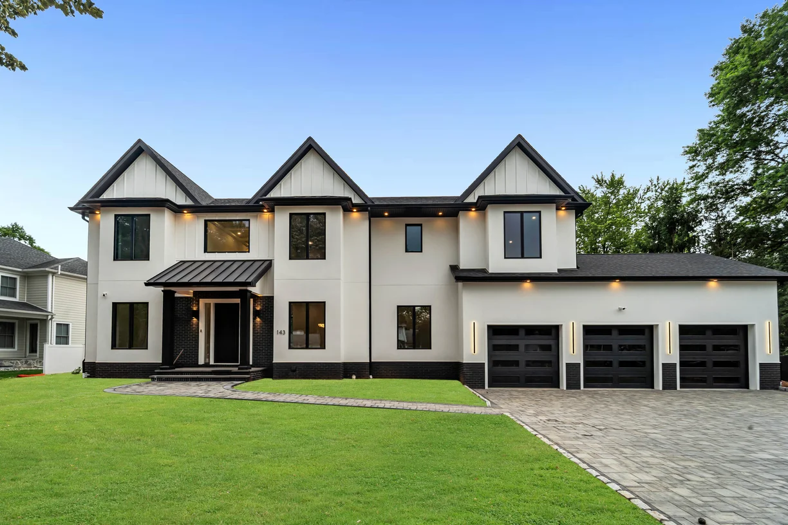

landEnhancement-Service
Premium Quality Solutions
Transform your vision into reality with our professional processing and enhancement services. We deliver exceptional results tailored to your needs.
Image
Experience the transformation power of our professional services.

24/7
Support
100%
Quality
Fast
Delivery